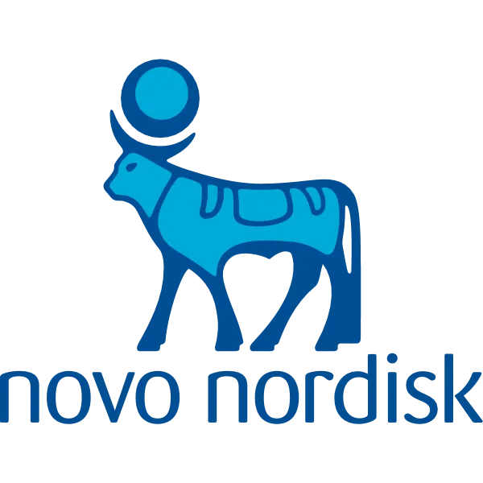
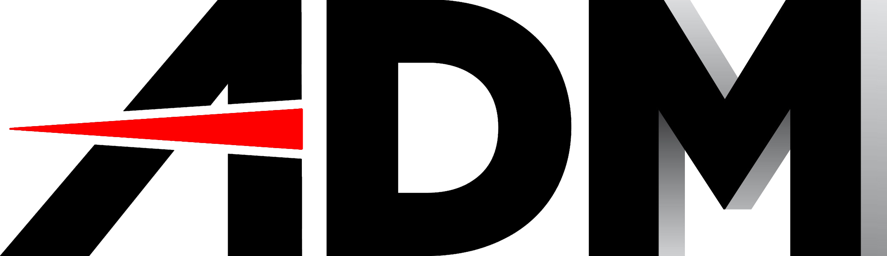
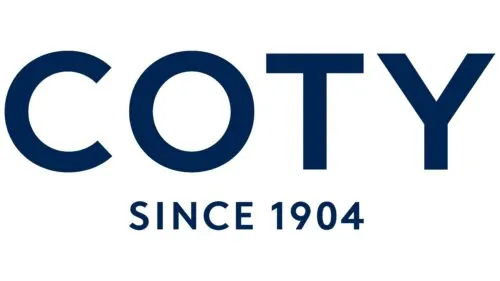

Expérience
Actuellement en BAC+3 Concepteur Développeur Web Fullstack en alternance, je conçois des applications modernes, performantes et sécurisées.
Stage Novo Nordisk
Novo Nordisk est une entreprise pharmaceutique danoise fondée en 1923, spécialisée dans le développement de médicaments pour le traitement du diabète, de l’obésité, des troubles de la coagulation et des maladies rares. Avec une présence mondiale, Novo Nordisk s’engage à améliorer la qualité de vie des patients grâce à des solutions innovantes et durables, tout en adoptant des pratiques responsables pour un impact positif sur la société et l’environnement.

Mes missions
Stage A2K Informatique
A2K Informatique est une petite entreprise de services informatiques située à Dreux, créée en 2011 et spécialisée dans le conseil, la maintenance et le support informatique. Elle propose des prestations variées comme la gestion de réseaux, l’assistance technique, la cybersécurité et les solutions de sauvegarde, principalement destinées aux TPE et PME, mais aussi aux particuliers. L’entreprise se distingue par son approche de proximité et son accompagnement personnalisé adapté aux besoins des structures locales.

Mes missions
4.5.6 Skin
4.5.6 Skin est une marque de soins de la peau fondée en 2019 par Noelly Michoux, une Franco-Camerounaise, et Imen Jerbi Azaiez, spécialisée dans les peaux mélaniques (phototypes IV, V et VI). Elle se distingue comme la première marque au monde à offrir une skincare entièrement personnalisée pour les peaux foncées, conçue sur la base de la science de la pigmentation cutanée.

Mes missions
ADM Mécanique générale de précision
ADM (Applications et Développements Mécaniques), basée à Lucé près de Chartres, est spécialisée depuis 20 ans dans la mécanique de précision. L’entreprise réalise l’usinage de composants, la fabrication d’outillages et la conception d’équipements industriels pour de nombreux secteurs (aéronautique, défense, médical, agroalimentaire…). Certifiée EN9100, ADM propose un service complet et s’appuie sur des partenaires et bureaux d’études pour garantir qualité et fiabilité.

Mes missions
Coty Chartres
Coty est une entreprise américaine de cosmétiques fondée en 1904 par François Coty. Elle est l’un des leaders mondiaux de l’industrie de la beauté, proposant une large gamme de produits de parfumerie, de soins de la peau, de maquillage et de soins capillaires. Coty possède un portefeuille diversifié de marques emblématiques telles que Calvin Klein, Marc Jacobs, Gucci, Hugo Boss, Rimmel London et CoverGirl. L’entreprise s’engage à offrir des produits innovants et de qualité tout en adoptant des pratiques durables pour répondre aux attentes des consommateurs.
